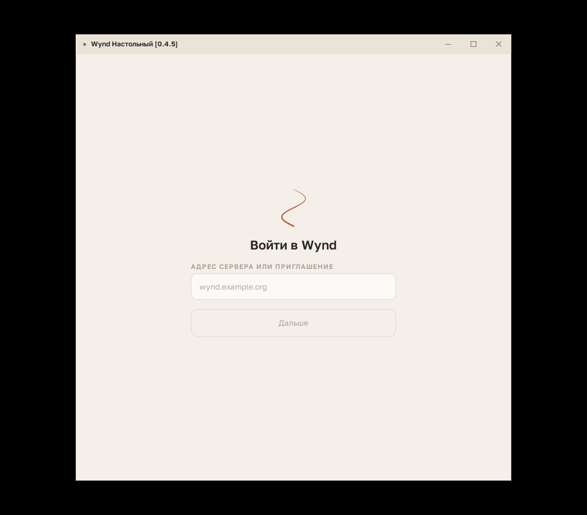
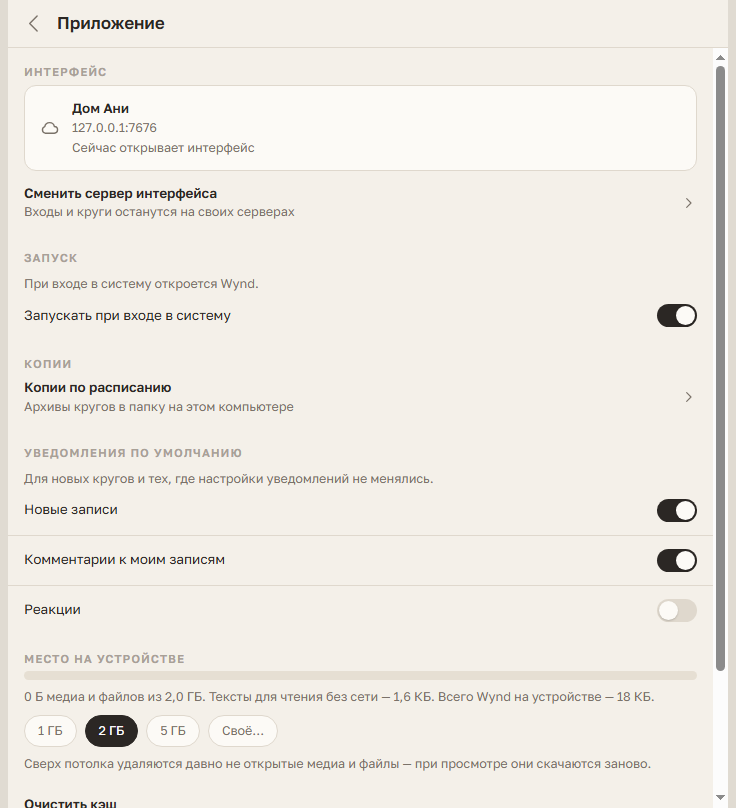

Linux «Wynd Настольный» — кадры 24.11.2026
План 69. Верхний кадр — настоящее окно Linux-сборки в Xvfb. Нижний — настоящая отрисовка экрана настроек в headless Edge с Linux-UA и мостом автозапуска; это не окно Linux, а проверка текста и строки. Трей-меню нативное и в headless-среде не снято.
1. Окно Linux — экран входа
Настоящий кадр окна `wynd-desktop` 0.4.5 в Xvfb (Ubuntu 24.04, GTK3/WebKit2GTK 4.1). Своя полоса заголовка, шрифты, поле адреса и «Дальше».

2. «Настройки → Приложение» — строка автозапуска принято 24.11
Настоящая отрисовка Svelte-экрана: «При входе в систему откроется Wynd» и «Запускать при входе в систему». Текст общий для Windows и Linux — без определения ОС. Кадр снят в браузере с мостом `__wyndDesktop` и ответом автозапуска; окно Linux будет показано отдельно на живой машине.

Не снято
- Меню трея: нативное StatusNotifierItem, для настоящего кадра нужен рабочий стол с AppIndicator (GNOME/KDE/XFCE); в Xvfb хоста трея нет. Не рисовал макет вместо него.
- Кнопка «Открыть в приложении» в Linux-браузере пока не включена.